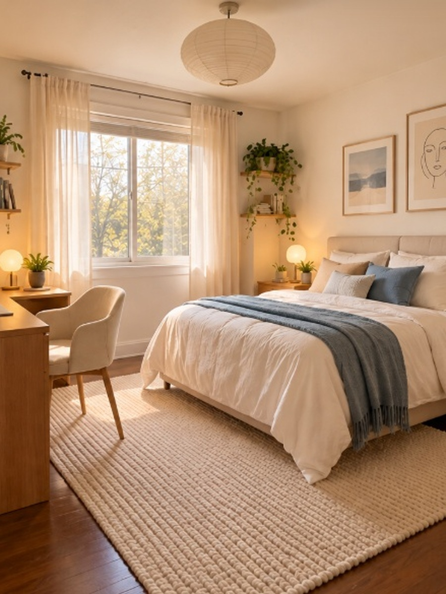
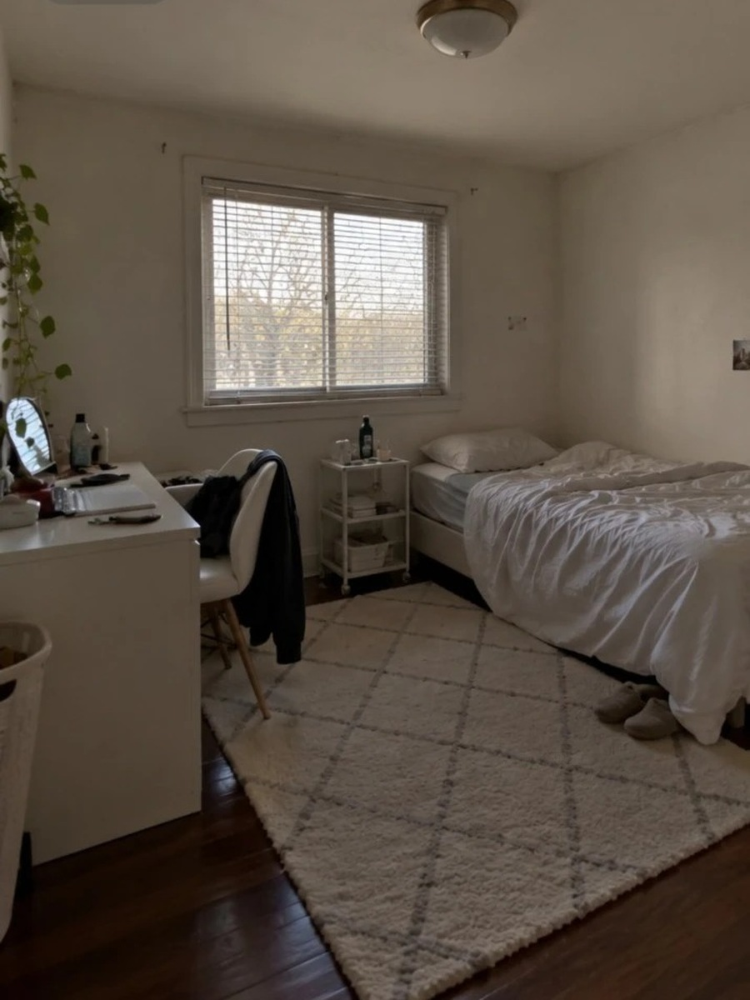

One photo from your phone. That's the whole brief.
Every door, window and piece of furniture, counted and kept in place.
Same view, same walls. New finishes, furniture and light.


Window kept 1 bed kept Desk kept BEFOREAFTERAny room, redesigned from a single photo.
Your room, its second draft.